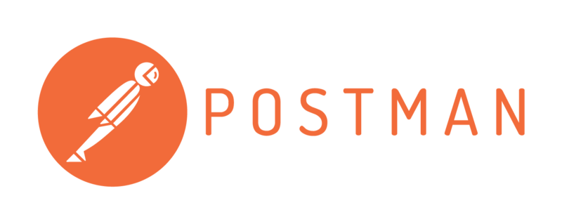

Features to include
-
Group postings with descriptions (That can include but not limited to: Scheduling for the group, content, type of player they're looking for, Discord, and type of group [casual, mid-core, hard-core etc] )
-
Looking for group postings for players looking for a group.
-
Search and filtering function for searching the group postings
-
A rough DM system just in-case the users wish to use that over Discord.
Information to display
API available?
-Postman Lost Ark API seems to be the only one available | Allows users to look up the Lost Ark Market without logging in
